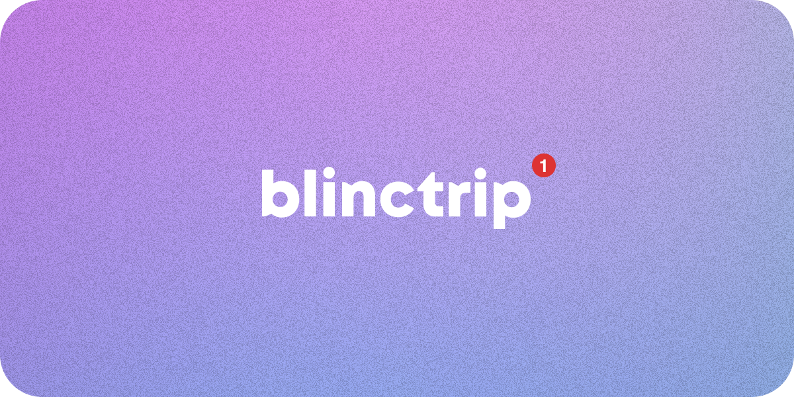
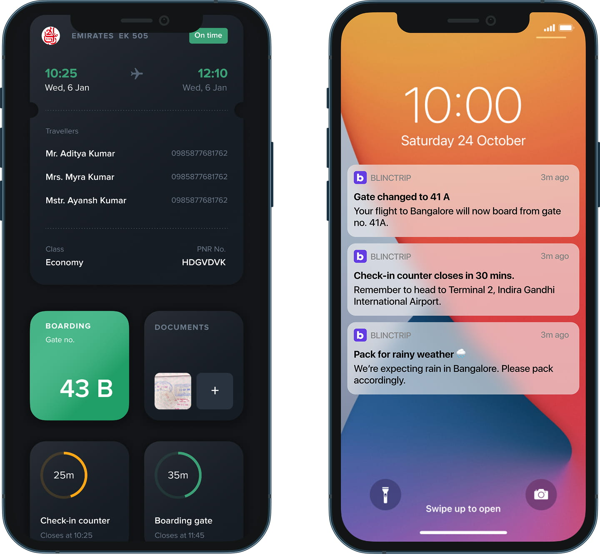

When to interrupt
The aim was fewer, more useful notifications. The system needed to consider the consequence for the traveller, alongside what had already been communicated.

Blinctrip / Notification engine
In early 2023, I led Blinctrip’s move from rule-based notifications to an AI-driven engine. The brief was to understand how a change affected the whole journey and help the traveller respond.
We were confident that models would become more capable, faster, and cheaper. That trajectory made the approach worth pursuing while the technology was still developing.
Role
Head of Product & Design
Scope
Journey intelligence & recovery
Context
AI transition, early 2023
Domain
Travel tech · Consumer
The problem
A flight-status update tells you what changed. It leaves you to find out what that means for the rest of your trip.
You check another booking, open a map, compare timings, and call a provider. By the time you have a new plan, the information may have changed again.

The design shift
A flight delay matters because of what follows it. The same delay can be harmless for one traveller and cause another to miss a connection, a booking, or a fixed commitment.
That required a shared view of the traveller’s commitments, the services they depended on, and conditions on the ground.
Bring the traveller, the destination, and the service providers into one view.
FlightStats supplied flight estimates, gate changes, and baggage information. Google Maps, weather data, and SITATA added routes, traffic, and local disruption information.
Blinctrip data, calendar, and email supplied the trip context. Ground partners such as Savaari provided driver status and transport options.
There were still gaps. We knew the traveller’s location and could detect a home-geofence exit. We could not reliably know whether they had checked in or dropped their bags.
Inside the engine
For each event, the AI assessed whether the current plan still worked and whether recalculation was needed. It could send inputs to relevant APIs and use their responses to simulate revised itineraries.
A directed acyclic graph (DAG) describes the dependencies between journey steps. Travel times, deadlines, and provider policies constrain which revised plans are feasible.
The candidates returned to the AI for assessment: which commitments could still be met, what would the traveller give up, and what remained unresolved?
Select a circle to explore. Choose Journey dependencies to compare the delayed and revised plans.
This map reconstructs the reasoning model. It does not specify a graph database or claim a persistent DAG implementation.
From information to a decision
In the prototype, a one-hour flight delay puts a trail booking, car pickup, and hostel arrival at risk. The traveller can remove two stops, compare alternative flights, or seek more information.
Loading the interactive prototype…
Skipping two stops restores the trail timing and improves the hostel arrival. The rental pickup still needs attention: the traveller must confirm that the provider will hold the car.
The product decisions
The aim was fewer, more useful notifications. The system needed to consider the consequence for the traveller, alongside what had already been communicated.
Feasibility did not settle the choice. Paying more, skipping an attraction, or leaving earlier required the traveller to review and confirm a plan.
Reflection
The difficult part was deciding what the system knew, what it needed to check, and when the traveller needed to take over. The quality of that judgement determined whether a notification felt useful.
The wider storyBuilding BlinctripWhat are you working on?